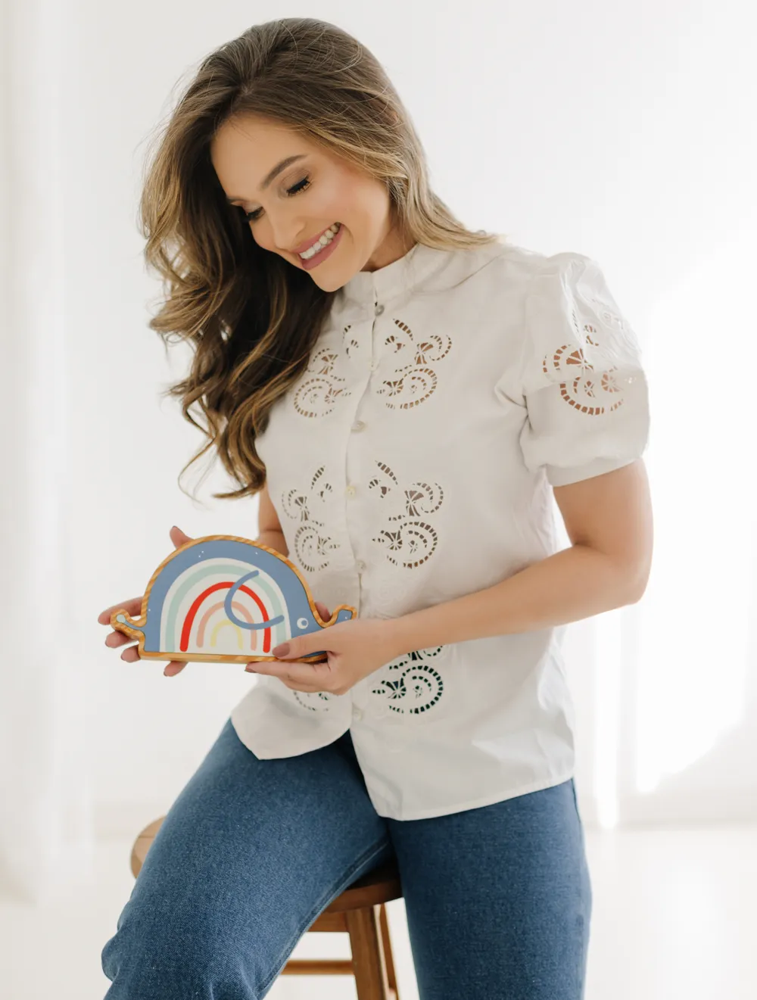
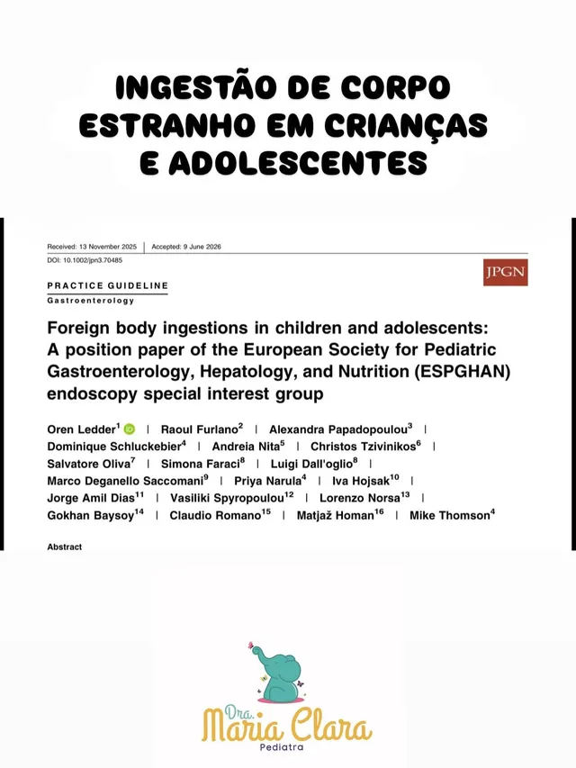

Os primeiros anos moldam uma vida inteira. Acompanho o desenvolvimento do seu filho de 0 a 3 anos, sem pressa e sem respostas prontas, com orientações baseadas em evidência.
Agendar consulta pelo WhatsApp →os primeirosmil diasmoldam uma vida inteira.
Minha consulta é um espaço de escuta, orientação e acompanhamento próximo. Cada criança tem o seu próprio ritmo, e cada família carrega uma história única. Por isso eu atendo sem pressa e sem respostas prontas, com orientações baseadas em evidência e nas recomendações da Sociedade Brasileira e da Academia Americana de Pediatria.
Três formas de consulta.
1 hora · sem pressa · plano claro para casaNo consultório
Aldeota, Fortaleza · espaço preparado para a criança, com todos os recursos do exame
Em casa
Atendimento domiciliar · num ambiente que o bebê já conhece · ideal para recém-nascidos
Online
Telemedicina · dúvidas, renovação de receitas, atestados e acompanhamento entre consultas
Também atendo em Teresina (PI). Datas disponíveis pelo WhatsApp.

mcPrazer, sou a Dra. Maria Clara.
Sou pediatra dedicada ao acompanhamento das crianças nos primeiros anos de vida, uma fase fundamental para o desenvolvimento e para a construção de uma vida saudável.
Atuo especialmente no acompanhamento do desenvolvimento infantil nos três primeiros anos, olhando para os aspectos neurológico, motor, emocional e social. Atendo no consultório em Fortaleza e em Teresina, em casa e por telemedicina.
O que eu acompanho de perto.
0–3 anos · 5 frentesRecém-nascido e primeira consulta.
Marcos do desenvolvimento.
Fala e linguagem.
Birras e emoções.
Sono e alimentação.
Ciência explicada para pais.
@mariaclara.pediatra · instagram ↗
06Em números.
Quem já passou por aqui.
“Minha filha tem 2 anos e sofre com dermatite atópica, já tínhamos passado por outros atendimentos sem melhora significativa…”
Láina L. · avaliação no Google
“Levei meu recém-nascido para consulta com a Dra. Maria Clara e fiquei encantada com a atenção e o cuidado.”
Eliza · mãe de paciente
Guia gratuito.
para consultar quando o medo tentar decidir por vocêFebre sem pânico
Entenda a febre infantil com mais calma, critério e segurança
Dúvidas frequentes.
05 perguntas01Quais são os formatos de consulta?
+
Três: no consultório da Aldeota, em casa (domiciliar) e online (telemedicina). No WhatsApp a gente ajuda você a escolher o melhor para o momento do seu filho.
02Para que serve a teleconsulta?
+
Para tirar dúvidas, renovar receitas, emitir atestados e acompanhar a criança entre as consultas presenciais. Quando o exame físico é necessário, a doutora orienta a consulta presencial.
03A doutora atende só até os 3 anos?
+
O foco é o desenvolvimento nos três primeiros anos, a fase que mais pede acompanhamento de perto. Fale pelo WhatsApp para confirmar o atendimento para a idade do seu filho.
04Também tem atendimento em Teresina?
+
Sim. A Dra. Maria Clara também atende em Teresina (PI). Chame no WhatsApp para saber as datas disponíveis.
05Como agendar?
+
Pelo WhatsApp, em horário comercial. É só tocar em qualquer botão “Agendar” desta página.